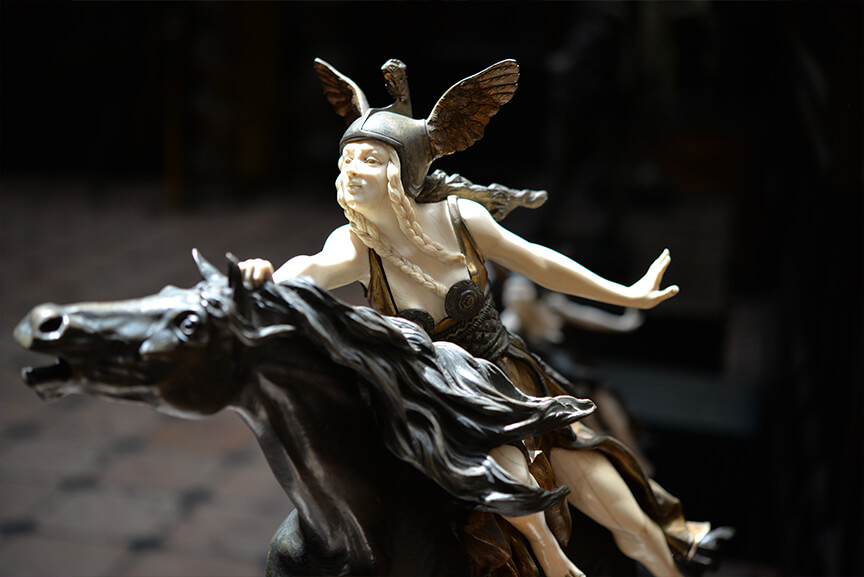

O Instituto Ricardo Brennand é um espaço cultural sem fins lucrativos inaugurado em 2002, que salvaguarda um valioso acervo artístico e histórico originário da coleção particular do industrial pernambucano Ricardo Coimbra de Almeida Brennand.
É um importante vetor do turismo cultural do estado de Pernambuco com um valioso acervo de mais de 60.000 itens, dentre os quais destaca-se a maior coleção do mundo de Frans Post, primeiro paisagista das Américas e primeiro pintor da paisagem brasileira. Funciona em uma das mais modernas e bem equipadas instalações museológicas, bibliográficas e arquivísticas do Brasil, possuindo um complexo de edificações constituído pelo Museu Castelo São João (museu de armas brancas), Pinacoteca, Biblioteca, Auditório, Parque de Esculturas e uma Galeria para exposições temporárias.Dentre suas exposições, destacam-se: A exposição Albert Eckhout volta ao Brasil 1644- 2002, que inaugurou a Pinacoteca no ano de 2002 recebendo mais de 160.000 (cento e sessenta mil) visitantes; A exposição permanente de Frans Post e o Brasil Holandês na Coleção do Instituto Ricardo Brennand, aberta desde 2003 reunindo pela primeira vez no Brasil um conjunto inédito que corresponde a 10% das obras do artista; A exposição permanente Paisagens Brasileira no XIX, inaugurada no início de 2006 retratado por artistas viajantes; A exposição Armaria no Museu Castelo São João, com significativa coleção de armas brancas, armaduras e pinturas orientalistas; O Jardim de Esculturas, com relevante acervo de esculturas em estilo neoclássico; A exposição temporária A Beleza na Escultura de Michelangelo, a qual inaugurou a Galeria em 2011; A exposição Dores da Colômbia, do artista colombiano Fernando Botero, com expressiva visitação obtendo o maior número de público da mostra no Brasil em 2012 e atualmente também conta com a exposição comemorativa dos 100 anos do colecionador pernambucano Odorico Tavares. Situado numa área de 77.603 m², o Instituto Ricardo Brennand possui um significativo percentual de mata atlântica preservada e está localizado aproximadamente 1 km do campus da UFPE e do IFPE.